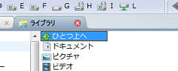
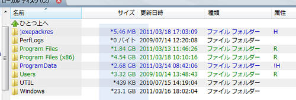

長いファイル名を省略表示する際のファイル名文字数を本体と拡張子それぞれで設定します。
文字数はおよその文字数です。利用するフォントの標準的な文字幅を元に制限幅を計算するため、
文字数通りの制限にならない場合もあります。
設定の切り替えはプロパティバーのアイコンまたは、 ［表示］メニューの［表示する種類やプロパティ］のメニューより切り替えます。 また、この設定は表示するフォルダごとに記録されます。
ファイル ペインで先頭項目や末尾項目にカーソルがある場合、 ↑↓キーの押下で先頭から末尾に、 または末尾から先頭にカーソルがラップして移動するかどうかを指定します。
ツリー リスト・ファイル ペインに表示するファイル名を小文字で表示します。
ファイル ペインに表示するファイル名の拡張子を桁位置を合わせて表示します。
ファイルを詳細表示するとき、表示するファイルの情報の長さに応じて 各情報の桁の長さを自動的に調整します。
ファイルを詳細表示するとき、1行おきに背景色を変更して視認性を向上させます。
ファイルを詳細表示するときDOS名のカラムを省略します。
縮小および概要表示モードの場合、標準の動作ではファイル名が強調表示されていますが、 このオプションを設定すると強調表示が解除されます。
通常はバイトの実数値ですが、これをチェックするとKB（1KB = 1024バイト）、MB（1MB = 1024KB）などの 単位でファイル サイズを表示します。
ファイルのタイム スタンプは通常は4桁表示ですが、これをチェックすると西暦は下2桁の数値で表示されます。
ファイル ペイン内のファイルをマウス カーソルでポイントした際、 そのファイルの情報（例えばエクセルやワードのドキュメント ファイルなら、 その文書の作成者や概要など）をチップ表示します。
ファイルペインでファイル名を表示する際に、例えばABC1.TXT, ABC9.TXT, ABC20.TXT, ABC101.TXTのファイルがあった場合、次のようにソートされます。
| 通常の場合 | 数値の大小で比較する場合 |
|---|---|
| ABC1.TXT | ABC1.TXT |
| ABC101.TXT | ABC9.TXT |
| ABC20.TXT | ABC20.TXT |
| ABC9.TXT | ABC101.TXT |
フォルダ情報を格納しているDesktop.iniファイル、.DS_Storeファイルや、 サムネイル キャッシュ情報を格納しているThumbs.dbファイルをファイル ペインで表示しないようにします。
シェルネームスペースでは、FATやNTFSのファイルシステムの “.” や “..” のような、 そのフォルダ自身や親フォルダを示すフォルダエントリを持ちません。 この項目をチェックすると、ファイルシステムの“..”をエミュレーションし、 ファイルペインでこのオブジェクトをダブルクリックしたり、選択して Enterキーを押下することで、 親フォルダへ移ることが可能となります。

表示するアイコンの大きさ・ソート種別・表示方法をフォルダごとに記憶します。 この設定をチェックしない場合には、新しく開いたフォルダは直前のフォルダの表示方法を引き継ぎます。
ファイルペインで一般のフォルダを開くと、そのフォルダにさらにフォルダが存在する場合、
それら配下のフォルダ単位の総ファイルサイズを計算して表示することが可能です。
接続されているドライブによって、CD-ROMやネットワークドライブなどは、
情報の収集に時間や負荷がかかることが多いため、
計算対象のフォルダをドライブの種別によって制限することも可能です。

書庫と認識できるファイルをフォルダ ツリーから除外して表示します。
フォルダツリーで選択されている現在のフォルダを1行全体で選択表示します。
フォルダツリーで階層構造を示すための点線を表示しないようにします。
フォルダツリーで現在選択されているフォルダの名称を太字フォントを使って表示し、 他のフォルダと区別して確認できるようにします。
これをチェックすると、選択したオブジェクトがExif情報を持った画像ファイルであれば、 Exif情報の一部をサムネイルイメージの下に簡易表示します。
フォルダアイコンをサムネイル表示する場合、 サムネイル生成のためのディスクアクセスによってFileVisor7の応答レスポンスが悪化する場合があります。 応答レスポンスを重視する場合には、この設定をチェックしてフォルダアイコンのサムネイル表示を停止してください。
Windowsの持つキャッシュ機能の利用方法を選択します。
この項目をチェックすると、FileVisor7のタイトルバーに、 現在表示しているフォルダのフルパス名を表示します。 指定しない場合には簡略名称で表示します。
通常は “FileVisor7 -［フォルダ名］” という表示ですが、 この項目をチェックするとFileVisor7のタイトルバーでの表示が “［フォルダ名］- FileVisor7” という表示に変わります。
ショートカットキーの設定で設定したキーアサインをメニューに表示します。